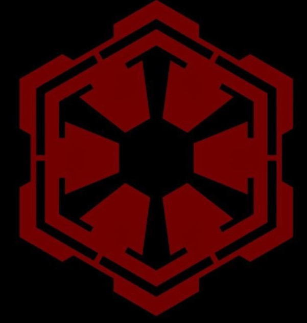

Star Wars é uma das franquias mais influentes da história do
entretenimento, criada por George Lucas em 1977. A saga
apresenta uma galáxia repleta de conflitos entre o bem e o
mal, envolvendo a Ordem Jedi, os Sith, a República Galáctica
e o Império.
Misturando ficção científica, fantasia, política e aventura,
Star Wars conquistou milhões de fãs ao redor do mundo através
de filmes, séries, livros, jogos e animações. Além de
revolucionar os efeitos especiais no cinema, a franquia se
tornou um verdadeiro fenômeno cultural.
Star Wars se passa em uma galáxia muito distante, onde diferentes planetas, espécies e civilizações coexistem sob a influência da Força, uma energia mística capaz de conectar todos os seres vivos. Durante muitos anos, a galáxia viveu sob a proteção da República Galáctica e da Ordem Jedi, guerreiros que utilizavam o lado luminoso da Força para manter a paz e a justiça.

Com o passar do tempo, uma ameaça começou a crescer nas sombras: os Sith, usuários do lado sombrio da Força movidos pela ambição e pelo desejo de poder. Secretamente liderados por Palpatine, os Sith manipularam conflitos políticos e iniciaram as Guerras Clônicas, uma grande guerra entre a República e os Separatistas que enfraqueceu a galáxia.

No meio desse conflito surgiu Anakin Skywalker, um jovem Jedi considerado o escolhido para trazer equilíbrio à Força. Porém, o medo de perder as pessoas que amava fez com que Anakin fosse manipulado por Palpatine, levando-o a abandonar os Jedi e se transformar em Darth Vader. Sua queda marcou o fim da Ordem Jedi e o início do domínio do Império Galáctico.

Com a ascensão do Império, a galáxia passou a viver sob um regime autoritário comandado pelo Imperador. Planetas foram dominados, opositores perseguidos e armas destrutivas como a Estrela da Morte passaram a representar o poder imperial. Mesmo diante desse cenário, surgiu a Aliança Rebelde, um grupo de resistência formado por heróis como Leia Organa, Han Solo e Luke Skywalker.

Treinado nos caminhos da Força, Luke se tornou a esperança da galáxia ao enfrentar Darth Vader e o Imperador. Durante o confronto final, Vader percebeu os erros que havia cometido e decidiu destruir Palpatine para salvar seu filho, trazendo novamente equilíbrio à Força e contribuindo para a queda do Império Galáctico.

Anos depois, os remanescentes do Império deram origem à Primeira Ordem, uma organização militar que buscava recuperar o controle da galáxia. Em resposta, surgiu a Resistência, continuando o legado da antiga Rebelião. Nesse período, uma nova heroína chamada Rey descobriu sua conexão com a Força e enfrentou o avanço do lado sombrio ao lado de aliados da Resistência.


A Ordem Jedi era composta por guerreiros sensíveis à Força que dedicavam suas vidas à paz e à proteção da galáxia. Guiados pelo lado luminoso da Força, os Jedi valorizavam disciplina, sabedoria e equilíbrio, atuando como defensores da República Galáctica.

Os Sith eram usuários do lado sombrio da Força, movidos pela ambição, raiva e desejo de poder. Diferente dos Jedi, acreditavam que as emoções eram fonte de força, buscando dominar a galáxia através do medo e da manipulação.

A República Galáctica foi o principal governo da galáxia durante milhares de anos, reunindo inúmeros planetas sob um sistema político democrático. Durante as Guerras Clônicas, a República enfrentou grandes conflitos que acabaram contribuindo para sua queda.

O Império Galáctico surgiu após a queda da República, liderado pelo Imperador Palpatine. Com um governo autoritário e militarizado, o Império espalhou controle e medo pela galáxia através de seu enorme exército e da poderosa Estrela da Morte.

A Rebelião surgiu para enfrentar a opressão do Império Galáctico, reunindo soldados, pilotos e líderes determinados a restaurar a liberdade na galáxia. Anos depois da queda do Império, a Resistência continuou esse legado ao combater a ameaça da Primeira Ordem, mantendo viva a esperança e a luta contra o avanço do lado sombrio.

A Primeira Ordem foi uma organização militar criada a partir dos remanescentes do Império Galáctico. Extremamente poderosa e violenta, buscava recuperar o domínio da galáxia utilizando tecnologia avançada e o poder do lado sombrio.
A Confederação dos Sistemas Independentes, também conhecida como Separatistas, foi um grupo de sistemas que rompeu com a República Galáctica durante as Guerras Clônicas. Liderados por Count Dooku, utilizavam grandes exércitos de droides em combate.